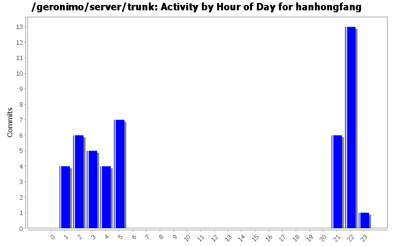
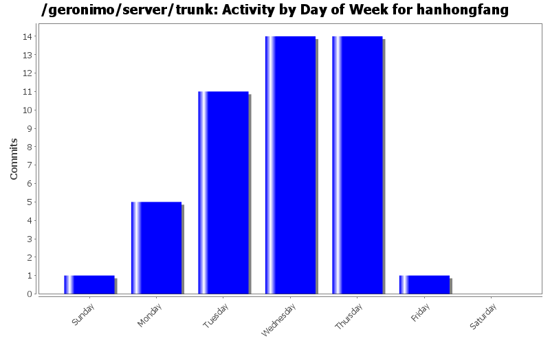
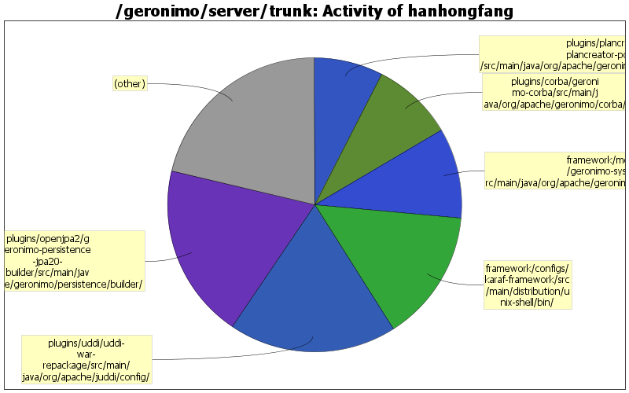

GERONIMO-6206 Concise infomation rather than Exception stacktrace when create plan from a WAR. Thanks Yi Xiao for the patch.
38 lines of code changed in 2 files:
add a comment to override org.apache.catalina.STRICT_SERVLET_COMPLIANCE
8 lines of code changed in 1 file:
GERONIMO-6127 spring sample travel: homepage can not be accessed problem
2 lines of code changed in 1 file:
GERONIMO-6154 Add monitoring to basic console view
2 lines of code changed in 2 files:
GERONIMO-6144 NPE in DependencyManager if configurations/bundles are uninstalled
8 lines of code changed in 1 file:
GERONIMO-6120 Could not connect to karaf shell by SSH
1 lines of code changed in 1 file:
GERONIMO-6116 differentiate the two "OpenEJB ORB Adapter" displayed in "Linstening on Ports" after server startup.
46 lines of code changed in 2 files:
Change to monitor DefaultActiveMQBroker only. GERONIMO-6110 On 3.0 we don't register the 61616 port and the IP address for the server socket is not correct.
13 lines of code changed in 1 file:
GERONIMO-6110 On 3.0 we don't register the 61616 port and the IP address for the server socket is not correct.
4 lines of code changed in 6 files:
use specific property name instead of general property in openjpa to avoid possible side effect. GERONIMO-6109 Derby connection failure in uddi when PortOffset is not 0
34 lines of code changed in 5 files:
add missing license header.
17 lines of code changed in 1 file:
GERONIMO-6109 Derby connection failure in uddi when PortOffset is not 0
84 lines of code changed in 6 files:
Using Properties class in felix util package to keep the config-substitutions in section as they are defeined. GERONIMO-5310 Better ordering for config-substitutions.properties
8 lines of code changed in 2 files:
revert rev1153013.
3 lines of code changed in 1 file:
GERONIMO-5310 Better ordering for config-substitutions.properties
32 lines of code changed in 1 file:
GERONIMO-6099 Can't connect to Jconsole via secure JMX Connector
8 lines of code changed in 1 file:
GERONIMO-6050 openejb-jar-2.2.xsd out-of-date
7 lines of code changed in 1 file:
add ConvertPositionalParametersToNamed=true to enable openjpa support for non-sequential positional parameters (OPENJPA-1999)
1 lines of code changed in 1 file:
upadte openjpa from 2.1.0 to 2.1.1-SNAPSHOT
1 lines of code changed in 1 file:
make META-INF/persistence.xml in web module processed, and also update the persistence ref search process to select correct one when several persistence units exist in the same ear module
70 lines of code changed in 2 files:
(5 more)